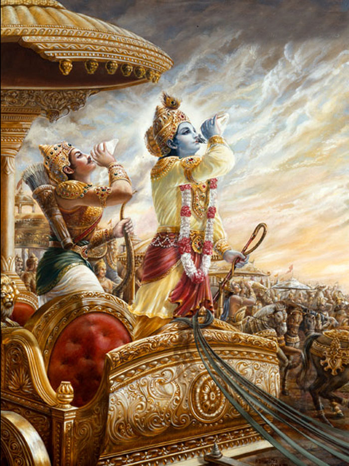

<div class="home__section section content-container">
    <div class="home__content">
        <div class="home__text">
            <p>
                Bhagavad-gita, comprised of <span class="highlight-word">700 Sanskrit verses</span>, this is 
                India’s single most important literary and
                philososphical contribution. It stands unrivalled as a
                timeless classic its message just as valid and relevant
                today as <span class="highlight-word">5,000 years ago</span> when it was first spoken and
                recorded.
            </p> <br/>

            <p>
                Sometimes called <span class="highlight-word">Gitopanishad</span> (as the essence of
                the 108 Upanishads), Bhagavad-gita is regarded as the
                most important book of the Vedic literature, the vast body
                of ancient knowledge which is the foundation of <span class="highlight-word">Vedic
                    culture</span>, <span class="highlight-word"> philosophy</span> and<span class="highlight-word"> spirituality</span>.
            </p><br/>

            <p>
                Bhagavad-gita gives a glimpse into India’s historical
            past in the glory days of Vedic civilization, but while
            archeologists and anthropologists dig and sift earth for
            bones and artifacts of that period, the spiritual substance
            of the Vedic age continues to live on in the immortal words
            of Bhagavad-gita and in the lives of persons who follow its
            meaning.
            </p> <br/>

            <p>
                Great thinkers of the Western world have studied
                Bhagavad-gita the American transcendentalists Ralph
                Waldo Emerson and Henry David Thoreau, the Russian
                writer Tolstoy, Goethe, Carl Jung, Albert Einstein, Dr.
                Albert Schweizer, Hermann Hesse, Rudolph Steiner,
                Aldous Huxley and many more.
            </p> <br/>

            <button class="redirect-button cursor-pointer" (click)="redirectToChapter()">
                Start Reading <i class="pi pi-arrow-right ml-5 right-arrow-icon"></i>
            </button>
        </div>
        <div class="home__image">
            
        </div>
    </div>
    
</div>